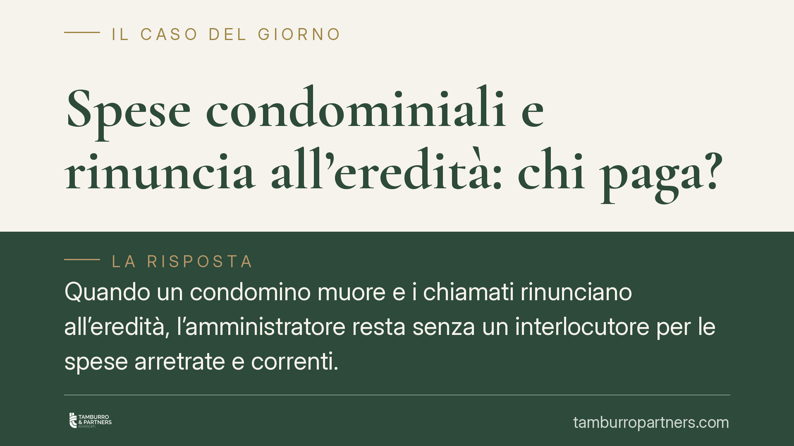

Spese condominiali e rinuncia all'eredità: chi paga?
Quando un condomino muore e i chiamati rinunciano all'eredità, l'amministratore resta senza un interlocutore per le spese arretrate e correnti. Capire chi risponde dei debiti condominiali dipende dalla validità della rinuncia, dalla possibile accettazione tacita e dalla nomina di un curatore dell'eredità giacente. Un errore di strategia può bloccare gli incassi per anni.

Il problema
Alla morte di un condomino i debiti verso il condominio non si estinguono: entrano nel patrimonio ereditario. Se i chiamati all'eredità rinunciano, l'amministratore si trova davanti a un alloggio formalmente "senza proprietario" e a spese che continuano a maturare. La domanda è concreta: a chi inviare i solleciti e contro chi agire.
Inquadramento normativo
La rinuncia all'eredità è disciplinata dagli artt. 519 e seguenti del codice civile. Deve essere espressa: va ricevuta da un notaio o dal cancelliere del tribunale del luogo di apertura della successione e inserita nel registro delle successioni. Una rinuncia solo verbale o comunicata per iscritto all'amministratore non produce alcun effetto giuridico. Chi rinuncia validamente è considerato come mai chiamato all'eredità e non risponde dei debiti del defunto, incluse le spese condominiali.
Attenzione però all'accettazione tacita prevista dall'art. 476 cod. civ.: chi compie atti che presuppongono la volontà di accettare — e che non avrebbe diritto di fare se non nella qualità di erede — accetta l'eredità anche senza dichiararlo. Chi ha pagato alcune rate condominiali, locato l'immobile, cambiato le serrature o ritirato le chiavi può avere accettato tacitamente, perdendo la possibilità di rinunciare. In tal caso risponde dei debiti.
Quando tutti i chiamati rinunciano e nessuno ha accettato, interviene la disciplina dell'eredità giacente (artt. 528-532 cod. civ.): su istanza di chi vi ha interesse, il tribunale nomina un curatore dell'eredità giacente. Il curatore amministra il patrimonio ereditario e diventa il soggetto legittimato a ricevere le richieste di pagamento e a rispondere, nei limiti dell'attivo ereditario, dei debiti del defunto.
Implicazioni pratiche per l'amministratore
Il primo passo è verificare la rinuncia. Un chiamato che si dichiara estraneo deve provare la rinuncia con l'atto notarile o la dichiarazione in cancelleria: senza quel documento, resta un potenziale erede e può essere escusso.
Il secondo nodo è temporale. La rinuncia può intervenire anche dopo la morte, entro i termini di legge, e ha effetto retroattivo. Agire frettolosamente contro un chiamato che poi rinuncia valida espone il condominio a soccombere e a pagare le spese di lite.
Il terzo aspetto riguarda l'eredità giacente. Se nessuno accetta e nessuno gestisce l'immobile, il condominio ha interesse concreto a chiedere la nomina del curatore: senza un interlocutore legittimato, il recupero del credito resta congelato e le spese correnti continuano a gravare sul bilancio condominiale.
Va ricordato infine che la rinuncia riguarda la posizione debitoria, non l'immobile: l'unità immobiliare resta nel compendio ereditario e il condominio potrà soddisfarsi, tramite il curatore o chi subentra, sul valore del bene.
Cosa fare in concreto
- Acquisite la prova formale della rinuncia: richiedete copia dell'atto notarile o della dichiarazione in cancelleria registrata nel registro delle successioni. Nessun altro documento ha lo stesso valore.
- Verificate eventuali atti di accettazione tacita: controllate pagamenti parziali, contratti di locazione, utilizzo o disponibilità delle chiavi da parte dei chiamati prima della rinuncia.
- Non agite in giudizio prima di aver chiarito la posizione successoria: una citazione contro un chiamato che rinuncia validamente comporta soccombenza e spese.
- Valutate l'istanza per l'eredità giacente: se nessuno accetta, chiedete al tribunale la nomina di un curatore quale interlocutore legittimato per solleciti e azioni di recupero.
- Documentate la morosità per data e natura: distinguete le spese maturate prima e dopo il decesso, perché incide sul soggetto obbligato e sulla strategia di recupero.
La materia incrocia diritto condominiale e successorio e richiede verifiche puntuali sulla posizione di ciascun chiamato. Consigliamo di esaminare la documentazione successoria prima di avviare qualsiasi azione, per evitare iniziative inefficaci o controproducenti.
---
*Contributo informativo a cura di Tamburro & Partners - Avv. Giuseppe Tamburro. Non costituisce parere legale.*
Ogni condominio ha una storia a sé.
Se gestisci un'amministrazione e vuoi un confronto su una specifica questione condominiale, scrivi allo studio. Ti rispondiamo entro un giorno lavorativo.